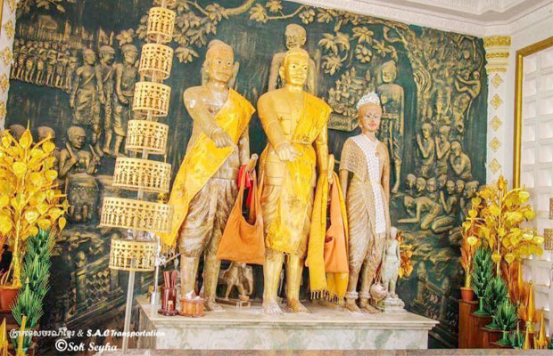
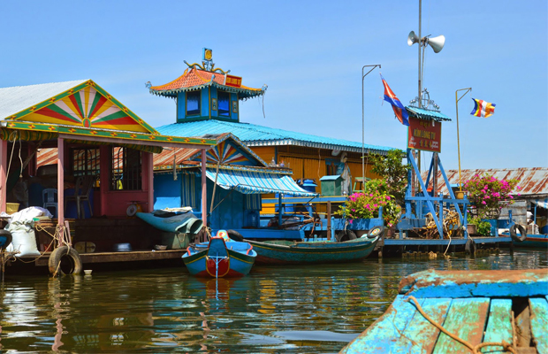
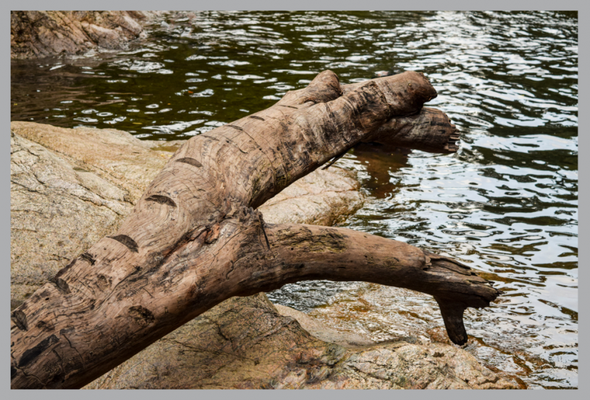
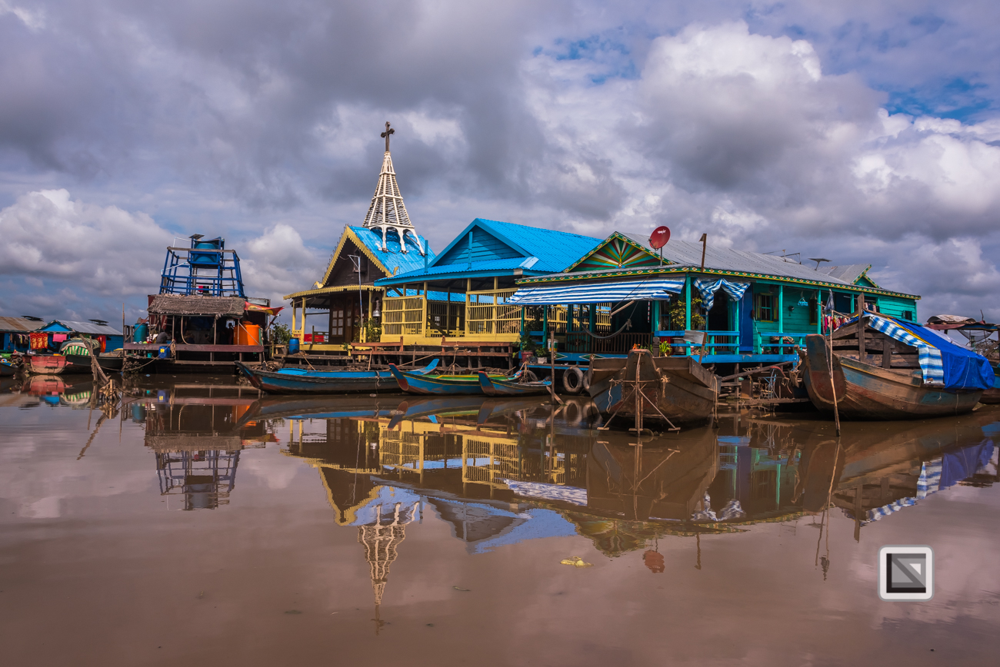
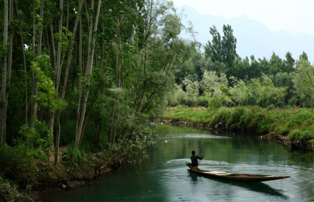

Pursat (Khmer: ខេត្តពោធិ៍សាត់, "drifting Bodhi") is a province (khaet) of Cambodia. It is in the western part of the country and borders clockwise from the north: Battambang Province, the Tonlé Sap, Kampong Chhnang Province, Kampong Speu Province, Koh Kong Province, and Thailand. It lies between the Tonle Sap and the northern end of the Cardamom Mountains. The Pursat River bisects the province, running from the Cardamoms in the west to the Tonle Sap in the east.The fourth largest province of Cambodia in area, Pursat ranks only 14th in population. The region is accessible by National Highway 5, by boat, rail and by numerous smaller roads. The capital, Pursat town, lies 174 kilometres north west of Phnom Penh by road and 106 kilometres south east of Battambang.Pursat is home to Wat Bakan, considered to be among the oldest active pagodas in Cambodia and revered as one of the most holy sites of Cambodian Buddhism. The province also hosts the annual River Run Race, an event that includes 5 km and 10 km races that generally follow the path of the Pursat River for men and women, including those requiring wheelchairs. Since its inaugural race in 2007, the event has grown to the second largest of its kind in Cambodia.Pursat means "drifting bodhi" in Khmer. Po (Khmer: ពោធិ៍) is the Khmer word for bodhi, which is the tree where the Buddha became enlightened. Sat comes from "rasat" meaning "to float".
Pursat offers a wide range of eating and drinking options with new businesses at all price ranges opening almost daily it seems. The Old Market area is, depending on your perspective, either an exciting and vibrant place offering a vast selection of eating and drinking options that is not to be missed, or a tourist ghetto offering a vast selection of generally non-authentic eating and drinking options that should be avoided at all costs. More likely your reality will lie somewhere in between, closer to which side is entirely up to you. Personally, I would neither over nor under-emphasize the area. Go at least once and draw your own conclusions and don't feel ashamed of your opinion no matter which side of the spectrum it should fall.The growth of the area started on what is now almost officially (there's a sign up now) known as "Pub Street"; or "Bar Street,"; depending on your choice of terminology, but food and drink options have since spread to a number of surrounding streets as well..
The listings here are only a sampling of what is out there and the best course of action is simply to wander the neighborhood and try out a few places, whether they are listed here or not. The temptation is to allow the Old Market/Pub Street magnet suck you into this tourist ghetto, and while definitely a worthy endeavor for consuming alcohol, you might consider that by and large, the best food options are *not* found here, but rather spread around town in less congested areas where there is less price competition that can result in an inferior product. This is not to say that there isn't good food in this area, but that there are some excellent opportunities found elsewhere - in particular farther up Sivatha and over on Wat Bo Road, and a few places like Abacus and The Touich that aren't near anything but themselves.
Neak Ta Khleang Moeang is the main historical site in Cambodia and located at Snam Preah Commune, Ba Kan District, about 6 kilometers south of Pursat provincial town. The site is the sacred place prayed and worshipped by tourists who come from the near and far areas. This venerable site has a statue of Neak Ta Khleang Moeang respected and worshipped by the Cambodian people. The statue is newly made in 1993 and put at the right place because the ancient statue is completely damaged by the civil war.Neak Ta Khleang Moeang, Pursat is one of the famous tourist attractions in Pursat which attracts large number of visitors every year. It is one of the historical sites, which has great significance to the tourists. If you are a history aficionado and would like to explore the historical sites and places of cultural interests in Pursat in Cambodia then do visit the Neak Ta Khleang Moeang, Pursat.Neak Ta Khleang Moeang, Pursat is one of the main historical sites in Cambodia. Pursat is a rural town located on the western side of Cambodia. It is also the fourth largest province in Cambodia, stretching from Thai border eastwards to the Tonle Sap Lake. I also include the Cardamom Mountains. There are a few attractions in Pursat and it is mostly the beauty of the natural surroundings that beguile the tourists to this place.Neak Ta Khleang Moeang, Pursat is a must visit in the itinerary of the tourists out on sightseeing in Pursat as the place is one of the famous historic sites in Cambodia. It largely appeals to the people who take interest in the past and the historical background of the province. It is located at Snam Preah Commune, Ba Kan District. Apart from a tourist attraction, it is also a religious center and a site sacred site which is frequented by pilgrims and worshippers who come here from near and far areas.Neak Ta Khleang Moeang in Pursat is one of the most esteemed sites that which has both historical and religious importance. It also houses a statue of Neak Ta Khleang Moeang which is worshipped by the Cambodian people. The ancient statue was completely damaged by the civil war and was replaced by a new statue.
Wat Preh Sedai and Pursat River, Pursat is one of the main areas of interest for the tourists arriving at Pursat to spend a day or two during the Tour of Cambodia. Counted among the popular sites it is included in a day's tour of the sites. Wat Preh S'dai and Pursat is the temple that is located to the southern bend of the river.A visit here is a highly enjoyable experience and the setting quite picturesque. Driving on National Highway 5 that connects Pursat with other Cambodian cities will give a view of Wat Preh S'dai and Pursat River. The visitors will find a new Wat being constructed at the temple site. Locals go there for a day's picnic by the riverside. If you intend to cross the river opt for the wooden bridge across the river road that connects the two ends of the river.After touring the temple site, move further north of the bridge and you reach the white sandy beach that keeps pulling visitors during the weekend. A scenic drive to Wat Preh S'dai and Pursat River is worth enjoying and tourist will relish the experience for a long time.
Chrak La Eang waterfall is a sight of natural beauty, with views of the waterfall and forests. Visitors can swim or slide down the cascading river or relax in the calmer 2km stretch of stream. To get there, head for Chheu Tom commune, Krakor district, and 73km southeast of Pursat town and about 41km from Krakor market. It takes approximately 2 hours on a motorbike and 1 ½ hours driving in a pick-up from Pursat. A Motodup should cost approximately USD $10-15 for a return trip and price is negotiable.
Kampong Luong Resort is a natural site located on the Tonle Sap in Kampong Luong commune, Krakor district, about 35 kilometers east of Pursat provincial town. The site is a sand cape suitable for swimming during the dry season. During the rainy season, especially during Pchumben, many cambodians gather there to play Chaol Teuk Leak (a traditional Khmer game, played by throwing water on one another) on the river. The game can be dangerous, however, because it is often played while in small boats. There are four other sites that Pursat residents prefer to visit. They include:-Kampeng: located in Pro Ngil village, Por Ngil commune, Kravanh district, about 20 kilometers from the provincial town.-Phnom Dak Preah: located in Roleap village, Roleap commune, Pursat district, about 10 kilometers from the provincial town.-Koh Sampeou Meas: located in front of the provincial hall in the middle of Pursat Island. It covers 2 hectares. Preah Theat: located in Sre Sdok village, Sre Sdok commune, Kan Deang district, about 20 kilometers from the provincial town.This sites in Pursat province cater mostly to local people who visit them, especially on holidays or during the traditional festivals.Once past the mouth of the Tonle Sap, the floating village of Kompong Luong is found 30 kilometers into the lake, on its southwest shore. It's truly a floating village, with a large population of Vietnamese fishermen.Almost totally overlooked by tourists because of its remoteness and difficult access, the village is completely self-sufficient. A floating school, factories to make ice for fish preservation, church, pagoda, service stations, pigsty, stores, boat or television repair shops, video club, karaoke bar, police station... everything is on the water. All trades are represented and everybody from children to grandparents goes by boat through the network of canals that cross this little town.
The Bak Tra Resort, Pursat is a very popular destination in the area and it should not be missed. The beauty of the place will surely amaze you like none else. You can reach the Bak Tra Resort, Pursat with ease as there are numerous means of transport available and you can avail hem to reach this spot.The Bak Tra Resort, Pursat is a natural resort that is worth paying a visit to. You need to travel for about 16 kilometers if you are staying at the provincial capital of Pursat. You need to take the Road Number 56 to reach the Kra Vanh District.The Bak Tra Resort, Pursat is indeed very beautiful with a small mountain that is about 50 meters in height. There is a forest area as well that has a rich foliage of Thlong trees. There is also a canal and a perennial well in the area. All of these adds to the charm of the place and you should not miss it.